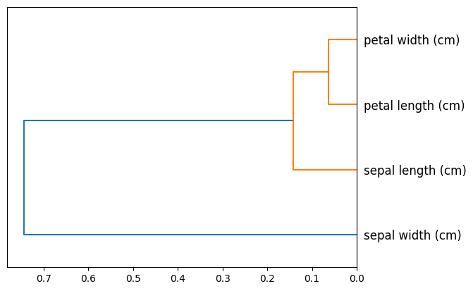

import sklearn.datasetsExplore Data
Explore data outside the context of a model
show_correlation
show_correlation (df:pandas.core.frame.DataFrame, method='pearson', cmap:str|Colormap='PuBu', low:float=0, high:float=0, axis:Axis|None=0, subset:Subset|None=None, text_color_threshold:float=0.408, vmin:float|None=None, vmax:float|None=None, gmap:Sequence|None=None)
Show correlation heatmap
If output is not rendering properly when you reopen a notebook, make sure the notebook is trusted.
Parameters:
df: DataFramemethod: Method of correlation to pass todf.corr()Remaining parameters are passed to
pandas.io.formats.style.background_gradient.
X_diabetes, y_diabetes = sklearn.datasets.load_diabetes(return_X_y=True, as_frame=True)show_correlation(pd.concat((X_diabetes, y_diabetes), axis="columns"))| age | sex | bmi | bp | s1 | s2 | s3 | s4 | s5 | s6 | target | |
|---|---|---|---|---|---|---|---|---|---|---|---|
| age | 1.00 | 0.17 | 0.19 | 0.34 | 0.26 | 0.22 | -0.08 | 0.20 | 0.27 | 0.30 | 0.19 |
| sex | 0.17 | 1.00 | 0.09 | 0.24 | 0.04 | 0.14 | -0.38 | 0.33 | 0.15 | 0.21 | 0.04 |
| bmi | 0.19 | 0.09 | 1.00 | 0.40 | 0.25 | 0.26 | -0.37 | 0.41 | 0.45 | 0.39 | 0.59 |
| bp | 0.34 | 0.24 | 0.40 | 1.00 | 0.24 | 0.19 | -0.18 | 0.26 | 0.39 | 0.39 | 0.44 |
| s1 | 0.26 | 0.04 | 0.25 | 0.24 | 1.00 | 0.90 | 0.05 | 0.54 | 0.52 | 0.33 | 0.21 |
| s2 | 0.22 | 0.14 | 0.26 | 0.19 | 0.90 | 1.00 | -0.20 | 0.66 | 0.32 | 0.29 | 0.17 |
| s3 | -0.08 | -0.38 | -0.37 | -0.18 | 0.05 | -0.20 | 1.00 | -0.74 | -0.40 | -0.27 | -0.39 |
| s4 | 0.20 | 0.33 | 0.41 | 0.26 | 0.54 | 0.66 | -0.74 | 1.00 | 0.62 | 0.42 | 0.43 |
| s5 | 0.27 | 0.15 | 0.45 | 0.39 | 0.52 | 0.32 | -0.40 | 0.62 | 1.00 | 0.46 | 0.57 |
| s6 | 0.30 | 0.21 | 0.39 | 0.39 | 0.33 | 0.29 | -0.27 | 0.42 | 0.46 | 1.00 | 0.38 |
| target | 0.19 | 0.04 | 0.59 | 0.44 | 0.21 | 0.17 | -0.39 | 0.43 | 0.57 | 0.38 | 1.00 |
iris = sklearn.datasets.load_iris()
X_iris, y_iris = iris["data"], iris["target"]
y_iris = pd.Series(y_iris, name="iris type").map(
{num: name for num, name in zip([0, 1, 2], iris["target_names"])}
)
X_iris = pd.DataFrame(X_iris, columns=iris["feature_names"])show_correlation(
pd.concat((X_iris, pd.Series(y_iris == "setosa", name="setosa"))), method="spearman"
)/var/folders/wv/pmfhhk1d4h1fkd_z5l83m0dw0000gq/T/ipykernel_96080/529445965.py:15: FutureWarning: The default value of numeric_only in DataFrame.corr is deprecated. In a future version, it will default to False. Select only valid columns or specify the value of numeric_only to silence this warning.
return df.corr(method=method).style.background_gradient(**kwargs).format("{0:,.2f}")| sepal length (cm) | sepal width (cm) | petal length (cm) | petal width (cm) | |
|---|---|---|---|---|
| sepal length (cm) | 1.00 | -0.17 | 0.88 | 0.83 |
| sepal width (cm) | -0.17 | 1.00 | -0.31 | -0.29 |
| petal length (cm) | 0.88 | -0.31 | 1.00 | 0.94 |
| petal width (cm) | 0.83 | -0.29 | 0.94 | 1.00 |
plot_column_clusters
plot_column_clusters (df, corr_method:str='spearman', ax:matplotlib.axes._axes.Axes=None, p=30, truncate_mode=None, color_threshold=None, get_leaves=True, orientation='top', labels=None, count_sort=False, distance_sort=False, show_leaf_counts=True, no_plot=False, no_labels=False, leaf_font_size=None, leaf_rotation=None, leaf_label_func=None, show_contracted=False, link_color_func=None, above_threshold_color='C0')
Plot a dendrogram based on column correlations
If output is not rendering properly when you reopen a notebook, make sure the notebook is trusted.
Adapted from https://github.com/fastai/book_nbs/blob/master/utils.py#L58-L64
Parameters:
df: DataFramecorr_method: Method of correlation to pass todf.corr()ax: MatplotlibAxesobject. Plot will be added to this object if provided; otherwise a newAxesobject will be generated.Remaining parameters are passed to
scipy.cluster.hierarchy.dendrogram.
ax = plot_column_clusters(X_iris)